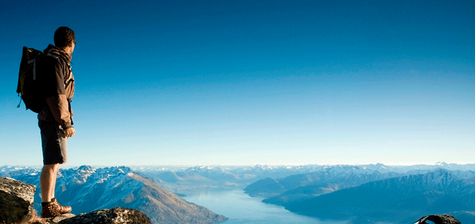

- 


Charter Flights
We have the crew, the aircraft, the skills and the specialised, local knowledge to plan and then make your dream remote lake visit, high country or mountain tramping or hiking adventure happen. We provide a full provisioning service for overnight or multi-day expeditions.
- Remote Lakes Day Tripper
fully catered day trips, fly in, fly out - Remote Lakes Trampers
fully catered multi day fly in, fly out - High Country Trampers
fully catered multi day, fly in, fly out - Mount Cook / Aoraki Climbers
single day fully catered, fly in fly out - Mount Cook / Aoraki Climbers
multi day fully catered, fly in fly out
All pricing by arrangement
Book Now Back to Flights